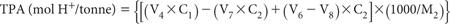
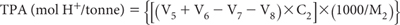
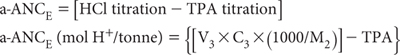

TPA represents the amount of acid released from the complete oxidation of sulfides (and OM) (combined with any pre-existing TAA), balanced against any buffering provided by acid-neutralising components in the soil (McElnea and Ahern 2004b).
In some soils, buffering supplied by acid neutralising components may exceed acid generated by oxidation of sulfides, resulting in an ‘excess’ acid neutralising capacity. Research conducted by Latham et al. (2000) showed excess carbonate (if present) can interfere with the efficiency of peroxide oxidation. Accordingly, a back titration step with HCl (to pH 4) is included as a precaution, following initial peroxide digestion, as well as a subsequent peroxide digestion step.
Soil samples are subjected to extreme oxidising conditions using H2O2. Continual application of heat in the presence of peroxide ensures all sulfide is converted to H2SO4. Titratable acidity is performed on a 1:40 soil/suspension with 1 M KCl to pH 6.5. The suspension is analysed by an auto-titrator (or manually) for pH and acidity.
Standard ≈0.05 M Sodium Hydroxide
As for Method 20B1.
Standard ≈0.25 M Sodium Hydroxide
As for Method 20B1.
2.66 M Potassium Chloride
Dissolve 198.81 g of potassium chloride (KCl) and make to 1.0 L with deionised water.
pH Buffers
Obtain commercially or prepare as described in Method 4A1. These should cover the range from pH ≈4.0–9.2.
30% Hydrogen Peroxide
Use only 30%, AR grade hydrogen peroxide (H2O2). Check the acidity of each new batch of chemical, which should contain less than the equivalent of 6 mol H+/tonne. Adjust, typically with 0.05 M NaOH, to pH 5.5 before use in the ‘final oxidation’ step. Handle and store this reagent with caution, as H2O2 is hazardous. Users should wear PVC gloves and safety glasses when using the chemical. Operations involving H2O2 should be carried out in a fume cupboard or where there is excellent ventilation.
Copper Chloride Solution (400 mg Cu/L)
Prepare by dissolving 1.073 g copper chloride dihydrate (CuCl2.2H2O) and dilute to 1.0 L with deionised water.
Standard ≈0.5 M Hydrochloric Acid (HCl)
Prepare by adding 50 mL concentrated (ρ = 1.16 g/mL; 31.5–33% w/v) HCl to about 400 mL deionised water slowly and with stirring. Cool, then dilute to 1.0 L. If the concentrated HCl has a specified density of around 1.18 g/mL (i.e. ≈12.3 M or 38% w/v), then the volume of HCl/L is ≈41.71 mL. Standardise against recently standardised ≈0.25 M NaOH using an auto-titrator or manually using phenolphthalein as indicator. Make appropriate adjustments to subsequent calculations if not exactly 0.5 M HCl.
First Action – all soils
Weigh accurately 2.00 g of finely ground soil (previously dried rapidly at 85°C; M2 g) into a suitably labelled and tared flask (e.g. 250 mL tall-form borosilicate glass beaker) on which the 50 mL level is accurately and clearly marked. Make provision for the inclusion of two blanks in each ‘analytical run’. In a fume cabinet (and wearing safety-glasses, laboratory coat and gloves), add 10 mL of 30% H2O2 to each flask and swirl to mix (see Note 1).
After 30 min, add deionised water with further swirling to make the total volume of suspension in the beaker between 45–50 mL (continue to refer to and follow Note 1).
Place the beaker on a hotplate (or steam bath) located in a fume cupboard for 30 min max and maintain sample and liquid contents at 80–90°C. If the reaction becomes too violent, remove from heat source and resume only when the violent reaction has subsided. Swirl samples on the hotplate periodically (e.g. every 10 min) and add deionised water as required to maintain volume between 45–50 mL, and to wash soil residue from the internal sides of the beakers. Allow samples to cool to near room temperature.
Add a second 10 mL aliquot of H2O2, waiting 10 min before returning flask to the hotplate for a maximum of 30 min, adopting the procedure outlined above. Allow samples to cool to room temperature and make to 50 mL with deionised water. Measure the suspension pH (pHOX), while stirring using a suitably calibrated pH meter and electrode. Use the appropriate option from Table 20.2, based on measured pHOX.
Table 20.2. Values of pHOX and corresponding recommended laboratory actions on samples.
pHOX value or range |
Recommended laboratory action |
Comments |
≤2 |
Recommence the peroxide oxidation step, etc from the start, using a fresh 1.00 g soil sample. |
Indicative of soil with high sulfide levels. |
>2 but ≤6.5 |
Continue from peroxide decomposition step. |
|
>6.5 |
Treat soil according to carbonate modification before continuing with peroxide decomposition step. |
Suggests the soil contains active carbonate, probably rendered more reactive following fine grinding during soil sample preparation. |
Carbonate modification for soils with pHOX>6.5: (HCl titration to pH 4)
Quantitatively transfer suspensions from the ‘First Action’ procedure to titration vessels, helped with deionised water. Carry out a slow titration (7–10 min minimum; best done on an auto-titrator) with 0.5 M HCl (C3) to pH 4. (Refer to Note 2 if calculating a-ANCE, and record the volume of titre (V3 mL).) Quantitatively transfer to original digestion beaker the pH 4 contents of the titration vessel, add 25 mL of 30% H2O2, and digest for a maximum of 1 h or until the oxidation reaction ceases.
Peroxide decomposition
Add 1.0 mL of CuCl2 (400 mg/L Cu Solution) to the H2O2 digestion beaker to decompose any residual peroxide. Speed the reaction by returning the digestion beakers plus Cu to the hotplate set to operate at 80–90°C and remove when peroxide decomposition has ceased (or after 30 min max). Volume of contents should be maintained at ≈45 mL during this time by adding deionised water as necessary.
When contents have cooled to near room temperature, quantitatively transfer these to a titration vessel using 30 mL of ≈2.66 M KCl. Give the digest beaker a final rinse with deionised water (into titration vessel), to obtain a suspension volume of ≈80 mL of 1 M KCl (i.e. for a 2.00 g sample, a final soil/solution ratio of 1:40).
Measure and record pH of suspension using a suitably calibrated pH meter and electrode prior to commencement of the TPA titration. This pH is termed pHTPA. Use the appropriate option from Table 20.3, based on the measured pHTPA.
Table 20.3. Values of pHTPA and corresponding recommended laboratory actions on samples and blanks.
pHTPA value or range |
Recommended laboratory action |
≤3 |
Titrate with stirring to pH 5.5 using standardised ≈0.25 M NaOH (molarity of C1) and record titre (V4 mL) prior to final oxidation. |
>3 but ≤5.5 |
Titrate with stirring to pH 5.5 using standardised ≈0.05 M NaOH (molarity of C2) and record titre (V5 mL) prior to final oxidation. |
>5.5 but ≤6.5 |
Go directly to final oxidation step. |
>6.5 |
TPA is zero. Do not perform final oxidation step. |
Blank <5.5 |
Titrate blank to pH 5.5 using 0.05 M NaOH and record titre (V7 mL). |
Final oxidation (for solutions with pHTPA now <6.5)
Add 1.0 mL of 30% H2O2 (that has been adjusted to pH 5.5 with dilute NaOH solution). Allow pHTPA to stabilise, then titrate with 0.05 M NaOH (molarity of C2). Record titre (V6 mL) of alkali added to reach pH 6.5. For blanks, record corresponding titre (V8 mL).
Retain the titrated suspension if peroxide KCl-extractable sulfur (SP), calcium (CaP) and magnesium (MgP) are subsequently to be determined: see Method 20E1.
Calculate TPA (to pH 6.5) and express as mol H+/tonne of soil.
For 0.25 M and 0.05 M NaOH titrations:

If only 0.05 M NaOH is titrated:

Report TPA (mol H+/tonne) on an oven-dry (85°C) basis.
If relevant, also report Net (excess) Acid Neutralising Capacity [a-ANCE (mol H+/tonne)], also on an oven-dry (85°C) basis (see Note 2).
1. Expect the initial addition of 30% H2O2 to cause an exothermic reaction, which for soils high in reactive pyrite can be quite violent (see Figure 20.5). The addition of deionised water at the first sign of vigorous reaction will help moderate the situation. Additionally, the reaction may become more vigorous with heating. In such cases, remove the relevant flasks from heat, add a small quantity of deionised water, and return the flask to the hot plate or equivalent when the reaction vigour has subsided. It is important to add water to maintain a volume of 45–50 mL; occasional washing with deionised water helps dissolve salts that adhere to the sides of the container above the liquid line.
Figure 20.5. Examples of insignificant oxidation reaction involving soil and H2O2 (left), and more vigorous oxidation reaction involving soil and H2O2 (right).
2. The HCl-titration is designed to dissolve any reactive carbonate that may be present, as carbonate can interfere with the efficiency of peroxide oxidation. The same titration can also be used to calculate a Net (excess) Acid Neutralising Capacity (a-ANCE) of the soil (McElnea and Ahern, 2004b). In so doing, a slow titration to pH 4.0 is required to ensure maximum reactivity of the carbonate, as the dissolution of any solid-phase carbonate into the soil extract/digest can be quite slow. To calculate a-ANCE, use the following formula:
Calculation of a-ANCE (mol H+/tonne)

3. The final oxidation step is introduced to ensure complete conversion of Fe2+ to Fe(OH)3 during titration.